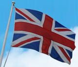

 Thank The Forces is a registered, MOD approved charity based in Polegate, East Sussex. Working with the BFPO and the MOD Thank The Forces ensure goodwill and morale gift boxes reach British Forces Personnel serving in conflict areas of the world.
Donations can take on many forms and be made in many different ways depending on what you would like to donate. Donations can include:
Throughout history brave men and women of the British armed forces have served their people and sacrificed much to ensure British citizens have freedom of speech, freedom of expression and freedom from persecution.
“Soldiers will be called upon to make personal sacrifices — including the ultimate sacrifice — in the service of the Nation. In putting the needs of the Nation and the Army before their own, they forego some of the rights enjoyed by those outside the Armed Forces.”—The Military Covenant
Without the brave men and women of the armed forces our everyday lives would be so very different. As a nation we are mutually obliged by the covenant to value and support our soldiers.With the freedom we are privileged to have, we can choose whether we decide to fulfil our obligation or not.
At Thank The Forces we believe our brave service personnel deserve our thanks.